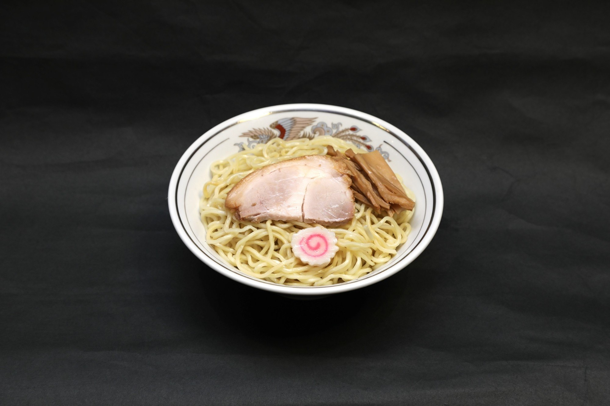

油そば
オヤジ直伝
平日昼限定
油そば 並（税別）
税込 748円〜
SCROLL
7じゃ足りない9じゃ多すぎ8回混ぜて!!
ONKO CHISHIN
温故知新
東京の文化である油そばを、
粋に、豪快に、
すすって頂きたい。
偉大なオヤジさんに、
畏敬の念と感謝を込めて。

オヤジ
直伝
直伝
MIX 8 TIMES
0回
7じゃ足りない、9じゃ多すぎ。だから、8回。
HOW TO EAT
オヤジ直伝、
油そばの食べ方。

1
8回混ぜる
7じゃ足りない、9じゃ多すぎ。
2
まずは3口、そのまま
何も足さずに、まずはそのまま。

3
お酢2周・ラー油1周
3口のあとに、回しかけて。
※お好みで、にんにくを増してください。
LUNCH ONLY
昼は、油そば。
テイクアウトも承ります。